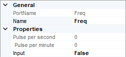

mekiFunction
- Cmpr
-
Cmpr is used to compare two input values.
- Parameters:
Xgy (boolean) – true when X is greater than Y, else false
Xey (boolean) – true when X is equal to Y, else false
Xly (boolean) – true when X is less than Y, else false
X (real) – Input value
Y (real) – Input value
{kind=link}
- Count
-
Count is used to count the transistion of a boolean value from false to true.
- Parameters:
Out (integer) – Number of times In has transitioned from false to true
In (boolean) – Input value
Present (integer) – Presets the counter to a specific value, defaults to 0
Dir (boolean) – Count direction, true for up while false for down
Enable (boolean) – To enable In counting
Reset (boolean) – If true, out = preset and no counting. It act as a reset switch
{kind=link}
- Freq
- 
Freq is used to calculate the changing frequency of a boolean value.
- Parameters:
Pps (real) – The changes in the frequency per second
Ppm (real) – The changes in the frequency per minute
In (boolean) – Input value
{kind=link}
- Hysteresis
-
Hysteresis can output a boolean value according to thier rising edge and falling edge limit.
- Parameters:
In (real) – Input value
Out (boolean) – Output value
Rising_Edge (real) – Rising edge limit, Out become true when In greater than it
Falling_Edge (real) – Falling edge limit, Out become false when In less than it
{kind=link}
- IRamp
-
IRamp provides linear ramping output based on time set.
- Parameters:
Out (integer) – Output value
Min (integer) – Start value of the ramping
Max (integer) – End value of the ramping
Delta (integer) – Value change every time
Secs (integer, second) – Time intervals very time change
{kind=link}
- Limiter
-
Limiter limits the output according to the upper limit and lower limit.
- Parameters:
Out (real) – Output value
In (real) – Input value
lowLmt (real) – Lower limit for Out
highLmt (real) – Upper limit for Out
{kind=link}
- Linearize
-
Linearize defines 8 sets of corresponding data, and calculate the output value according to the input value with linearization data.
- Parameters:
Out (real) – Output value
In (real) – Input value
x0-x9 (real) – Range for In
y0-y9 (real) – Range of converted Out
{kind=link}
- Ramp
-
Ramp provides a triangle or sawtooth type ramping output.
- Parameters:
Out (real) – Output value
Min (real) – Minimum value of the ramping Out
Max (real) – Maximum value of the ramping Out
Period (integer, second) – The time for one complete Min / Max in second for ramp Out, range from 0 to 65535
ScanPeriod (integer, millisecond) – The time for Out updating interval, range from 100 to 65535
RampType (option) – Ramp type, triangle or sawtooth
{kind=link}
- SRLatch
-
SRLatch keeps output value to true as long as the set value is true, until the reset is triggered.
- Parameters:
Out (boolean) – Output value
Set (boolean) – Triggers to set Out to true
Reset (boolean) – Triggers to restore Out back to false
{kind=link}
- TickTock
-
TickTock outputs true and false values alternately according to the frequency
- Parameters:
Out (boolean) – Constantly change between true and false
TickPerSec (integer) – Change frequency of Out, range from 1 to 10
{kind=link}
- UpDn
-
UpDn records the changes of the input value, the record number can be documented in increasing or reducing order. The records can be reset too.
- Parameters:
Out (real) – Output Value
Ovr (boolean) – true when Out is greater than Limit
In (boolean) – Input Value
Rst (boolean) – Triggers to restore Out to 0
CDwn (option) – The trend of recorded Out, either Up or Down
Limit (real) – Limits Out when HoldAtLimit is true
HoldAtLimit (boolean) – Enable the Limit function
{kind=link}